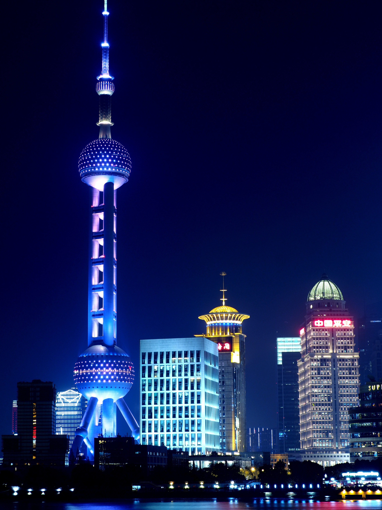

Qué es un rascacielos?
Dos son los requisitos para considerar a un edificio como rascacielos: tener al menos 150 metros de altura (500 pies) y contar con, al menos, 30 niveles o pisos. Los primeros fueron construidos allá por finales del siglo XIX, siendo el inicio del siglo X uno de los momentos claves en su desarrollo.
¿Sabías que China es el país con más rascacielos del mundo? Cuenta con 1 edificio de más de 600m de altura, 66 con más de 300m, 686 con más de 200m y 1873 con más de 150m. A la hora de considerar otros países podemos mencionar a Emiratos Árabes Unidos, Estados Unidos o Arabia Saudita (si bien este último destaca más por la altura de los mismos que por el número total).
¿Cuáles son los rascacielos más altos del mundo?
Si bien la elaboración de este ránking es complicada, puesto que algunos están todavía en construcción, a día de hoy el Top 3 de edificios más altos está formado por:
- Burj Khalifa

- Merdeka PNB118

- Torre de Shanghái